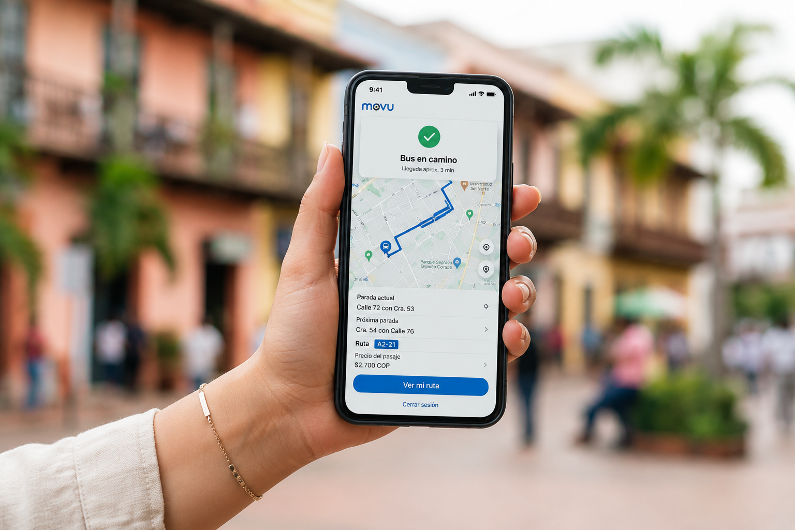

01 / RUTAS

Encuentra tu camino.
Explora recorridos de transporte público, identifica sus paradas y conoce las opciones disponibles para llegar a tu destino.
Moverte por Barranquilla debería ser más sencillo. Encuentra información sobre transporte público, conoce las novedades de movilidad y planifica tus recorridos con Movu.
Una nueva forma de entender la movilidad de tu ciudad.

¿Cuántas veces has salido de casa sin saber si tu ruta habitual tendrá algún cambio?
Para muchos estudiantes universitarios, el transporte público hace parte de todos los días. Sin embargo, conocer los recorridos, las novedades y los cambios que afectan un trayecto no siempre es sencillo.
Esa falta de información puede convertirse en tiempo perdido, estrés e incertidumbre. Movu nace para ayudarte a tomar decisiones mejor informadas durante tus desplazamientos.
Conoce lo que estamos construyendo ↗
Herramientas para conocer tus opciones, mantenerte informado y organizar tus recorridos.
Explora recorridos de transporte público, identifica sus paradas y conoce las opciones disponibles para llegar a tu destino.
Consulta información de empresas y recorridos como Transmetro y las rutas tradicionales.
Consulta cierres, desvíos, paradas suspendidas y otras novedades que pueden afectar tus recorridos.
Un asistente inteligente para resolver dudas sobre movilidad y ayudarte a encontrar información relacionada con tus recorridos.
No se trata solamente de encontrar una ruta. Se trata de tener más herramientas para decidir cómo moverte por la ciudad.
Consulta información que te ayude a organizar tus desplazamientos y anticiparte a los cambios.
Reúne información de distintas alternativas de transporte público en un mismo lugar.
Movu parte de una necesidad cotidiana: hacer más accesible y comprensible la información sobre movilidad urbana.

Movu nace de una experiencia cotidiana y de una pregunta: ¿por qué desplazarse por la ciudad tiene que implicar tanta incertidumbre?
Estamos construyendo una plataforma de movilidad urbana que conecta información sobre transporte público con las necesidades de las personas que utilizan sus rutas todos los días.
Comenzamos con los estudiantes universitarios de Barranquilla, con la intención de seguir construyendo soluciones que respondan a la realidad de nuestra ciudad.
¿Tienes una experiencia, una idea o una sugerencia sobre el transporte público de Barranquilla? Queremos conocerla.
MOVU / BAQExplora las rutas, conoce las novedades y empieza a planificar tus recorridos.
Comienza ahora ↗ M / 2026